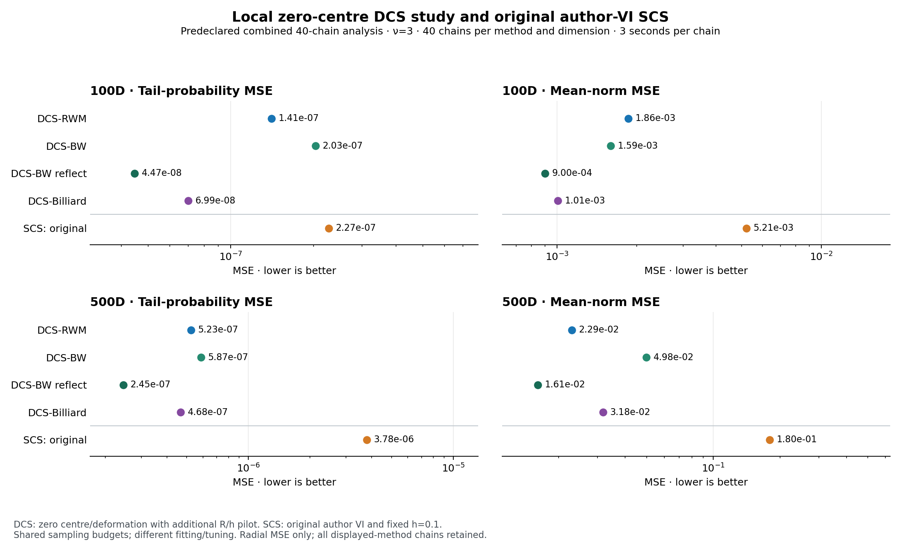
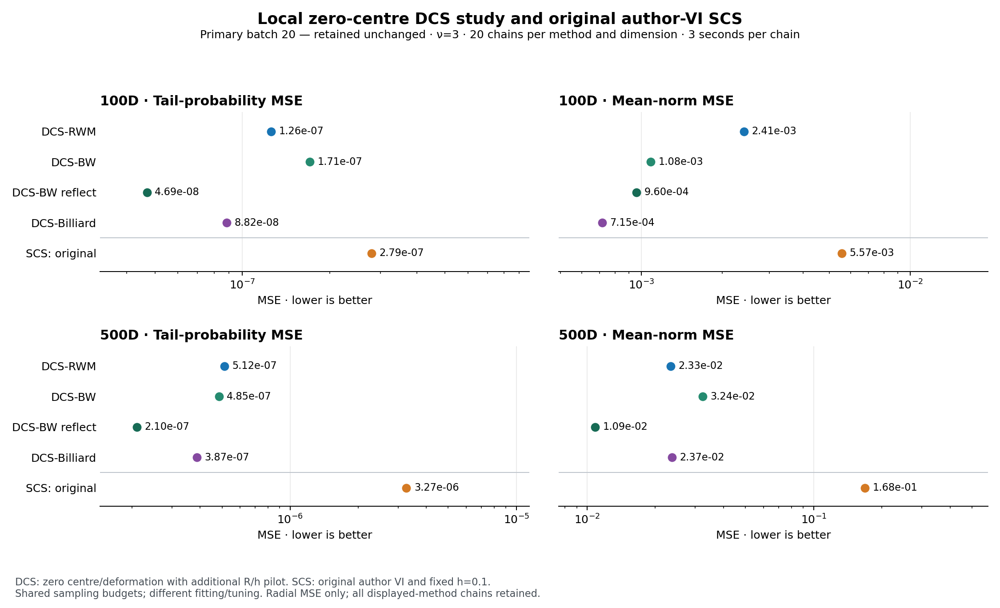
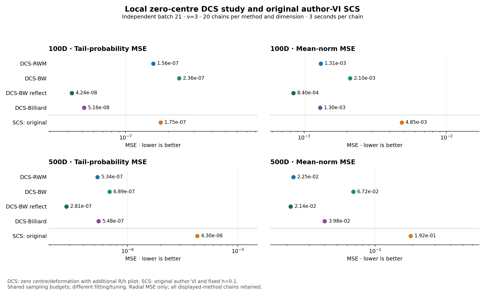

Five methods, two skewed Student-t targets (100D and 500D, ν=3), and two independent seed batches. The combined results retain all 40 chains per method and dimension: 400 unique chains in this comparison.
Comparison scope. DCS uses independently developed radial R/h settings and physical centre μ=0, with Möbius parameter δ=0. SCS uses its original author VI map, latitude 1.1 and fixed h=0.1. This compares calibrated DCS with the original-author SCS baseline; total tuning resources and map policies are not identical. The extra DCS calibration is outside the production clocks.
These are the existing JAX CPU results from a macOS ARM laptop, using two concurrent workers, 3 seconds per chain and 1,500 separate fixed-step warmup transitions. Each method discards the first third of its generated production iterations. Rejection repeats enter every estimate. Compilation, fitting, calibration and ESS calculations are excluded from sampling time; full-state radial recording and unthinned scalar capture are included.
Full-precision tablesAll 400 chain recordsProvenance and file hashesArchived calibration aggregates
The archived aggregates preserve the earlier four-SCS-setting investigation; only original SCS is active in these charts. The archive does not change the baseline or select a different SCS result for each metric.
| Target | Methods | Map R | Move parameter | Map policy |
|---|---|---|---|---|
| 100D | All four DCS methods | 6.94e-01 | 2.50e-02 | μ=0; δ=0; β=2 |
| 100D | Original SCS | 1.10e+00 | 0.10 | Original fitted centre and observer |
| 500D | All four DCS methods | 1.39e+00 | 4.47e-02 | μ=0; δ=0; β=2 |
| 500D | Original SCS | 2.23e+00 | 0.10 | Original fitted centre and observer |
RWM uses coordinate standard deviation h/√(d+2); the other DCS methods use initial uniform-ball increment radius h. These match the unreflected increment variance, not accepted movement. SCS h is a tangent-Gaussian coordinate scale and is not directly comparable to the ball radius.
All 40 chain estimates per retained method and dimension, with equal chain weights; 400 unique files across both batches.

| Target | Method | Chains | Tail MSE | Mean-norm MSE | Tail MSE / SCS | Norm MSE / SCS | Tail ESS/s | Norm ESS/s | Samples/s |
|---|---|---|---|---|---|---|---|---|---|
| 100D | DCS-RWM | 40 | 1.41e-07 | 1.86e-03 | 0.62 | 0.36 | 26,607.31 | 20,891.01 | 144,706.95 |
| 100D | DCS-BW | 40 | 2.03e-07 | 1.59e-03 | 0.89 | 0.31 | 25,147.60 | 19,806.86 | 135,944.34 |
| 100D | DCS-BW-reflect | 40 | 4.47e-08 | 9.00e-04 | 0.20 | 0.17 | 62,084.74 | 34,390.72 | 117,073.87 |
| 100D | DCS-Billiard | 40 | 6.99e-08 | 1.01e-03 | 0.31 | 0.19 | 53,785.04 | 31,502.14 | 111,194.39 |
| 100D | Original SCS | 40 | 2.27e-07 | 5.21e-03 | 1.00 | 1.00 | 13,945.54 | 10,091.48 | 101,787.42 |
| 500D | DCS-RWM | 40 | 5.23e-07 | 2.29e-02 | 0.14 | 0.13 | 6,120.07 | 5,726.63 | 51,766.85 |
| 500D | DCS-BW | 40 | 5.87e-07 | 4.98e-02 | 0.16 | 0.28 | 5,096.81 | 4,773.28 | 43,907.43 |
| 500D | DCS-BW-reflect | 40 | 2.45e-07 | 1.61e-02 | 0.06 | 0.09 | 15,326.30 | 10,612.70 | 39,142.20 |
| 500D | DCS-Billiard | 40 | 4.68e-07 | 3.18e-02 | 0.12 | 0.18 | 11,212.63 | 8,628.82 | 37,462.72 |
| 500D | Original SCS | 40 | 3.78e-06 | 1.80e-01 | 1.00 | 1.00 | 966.43 | 705.59 | 35,046.15 |
| Target | Method | Generated | Used after burn-in | Stored thinned | Summed sampling seconds | Acceptance |
|---|---|---|---|---|---|---|
| 100D | DCS-RWM | 17,371,500 | 11,581,000 | 231,620 | 120.05 | 56.08% |
| 100D | DCS-BW | 16,318,800 | 10,879,200 | 217,584 | 120.04 | 55.92% |
| 100D | DCS-BW-reflect | 14,055,000 | 9,370,000 | 187,400 | 120.05 | 77.77% |
| 100D | DCS-Billiard | 13,349,100 | 8,899,400 | 177,988 | 120.05 | 76.47% |
| 100D | Original SCS | 12,220,200 | 8,146,800 | 162,936 | 120.06 | 25.68% |
| 500D | DCS-RWM | 6,218,700 | 4,145,800 | 82,916 | 120.13 | 55.82% |
| 500D | DCS-BW | 5,275,800 | 3,517,200 | 70,344 | 120.16 | 55.80% |
| 500D | DCS-BW-reflect | 4,702,800 | 3,135,200 | 62,704 | 120.15 | 88.15% |
| 500D | DCS-Billiard | 4,502,400 | 3,001,600 | 60,032 | 120.18 | 81.64% |
| 500D | Original SCS | 4,212,000 | 2,808,000 | 56,160 | 120.18 | 12.83% |
Generated and used counts include rejection repeats. Stored traces were thinned separately and did not define point estimates or ESS. Summed chain seconds are not elapsed wall time. Throughput is total generated samples divided by summed production seconds.
| Target | Method | Empirical MSE standard error | Largest error share | Largest three share |
|---|---|---|---|---|
| 100D | DCS-RWM | 6.48e-04 | 29.48% | 58.29% |
| 100D | DCS-BW | 2.87e-04 | 9.20% | 25.97% |
| 100D | DCS-BW-reflect | 1.43e-04 | 9.25% | 22.52% |
| 100D | DCS-Billiard | 2.21e-04 | 19.14% | 31.47% |
| 100D | Original SCS | 1.13e-03 | 12.82% | 34.98% |
| 500D | DCS-RWM | 5.13e-03 | 12.42% | 35.94% |
| 500D | DCS-BW | 1.36e-02 | 24.96% | 43.11% |
| 500D | DCS-BW-reflect | 3.78e-03 | 16.75% | 39.92% |
| 500D | DCS-Billiard | 7.11e-03 | 18.04% | 37.03% |
| 500D | Original SCS | 2.99e-02 | 11.98% | 29.26% |
Original 20 chains per retained method and dimension; 200 unique chain files, with every chain retained for each displayed method.

| Target | Method | Chains | Tail MSE | Mean-norm MSE | Tail MSE / SCS | Norm MSE / SCS | Tail ESS/s | Norm ESS/s | Samples/s |
|---|---|---|---|---|---|---|---|---|---|
| 100D | DCS-RWM | 20 | 1.26e-07 | 2.41e-03 | 0.45 | 0.43 | 26,360.44 | 20,559.74 | 143,951.53 |
| 100D | DCS-BW | 20 | 1.71e-07 | 1.08e-03 | 0.61 | 0.19 | 25,048.37 | 19,637.37 | 135,408.93 |
| 100D | DCS-BW-reflect | 20 | 4.69e-08 | 9.60e-04 | 0.17 | 0.17 | 62,091.35 | 34,407.04 | 116,534.21 |
| 100D | DCS-Billiard | 20 | 8.82e-08 | 7.15e-04 | 0.32 | 0.13 | 53,588.05 | 31,497.28 | 110,869.32 |
| 100D | Original SCS | 20 | 2.79e-07 | 5.57e-03 | 1.00 | 1.00 | 13,749.02 | 10,112.86 | 101,232.96 |
| 500D | DCS-RWM | 20 | 5.12e-07 | 2.33e-02 | 0.16 | 0.14 | 6,272.58 | 5,826.07 | 52,135.87 |
| 500D | DCS-BW | 20 | 4.85e-07 | 3.24e-02 | 0.15 | 0.19 | 5,102.28 | 4,702.26 | 44,039.87 |
| 500D | DCS-BW-reflect | 20 | 2.10e-07 | 1.09e-02 | 0.06 | 0.06 | 15,268.10 | 10,537.63 | 39,251.84 |
| 500D | DCS-Billiard | 20 | 3.87e-07 | 2.37e-02 | 0.12 | 0.14 | 11,124.12 | 8,569.14 | 37,513.35 |
| 500D | Original SCS | 20 | 3.27e-06 | 1.68e-01 | 1.00 | 1.00 | 1,036.20 | 716.36 | 35,374.58 |
| Target | Method | Generated | Used after burn-in | Stored thinned | Summed sampling seconds | Acceptance |
|---|---|---|---|---|---|---|
| 100D | DCS-RWM | 8,640,600 | 5,760,400 | 115,208 | 60.02 | 56.07% |
| 100D | DCS-BW | 8,127,300 | 5,418,200 | 108,364 | 60.02 | 55.90% |
| 100D | DCS-BW-reflect | 6,995,400 | 4,663,600 | 93,272 | 60.03 | 77.76% |
| 100D | DCS-Billiard | 6,655,200 | 4,436,800 | 88,736 | 60.03 | 76.46% |
| 100D | Original SCS | 6,076,800 | 4,051,200 | 81,024 | 60.03 | 25.67% |
| 500D | DCS-RWM | 3,131,100 | 2,087,400 | 41,748 | 60.06 | 55.91% |
| 500D | DCS-BW | 2,646,000 | 1,764,000 | 35,280 | 60.08 | 55.81% |
| 500D | DCS-BW-reflect | 2,358,000 | 1,572,000 | 31,440 | 60.07 | 88.16% |
| 500D | DCS-Billiard | 2,254,500 | 1,503,000 | 30,060 | 60.10 | 81.63% |
| 500D | Original SCS | 2,125,500 | 1,417,000 | 28,340 | 60.09 | 12.82% |
Generated and used counts include rejection repeats. Stored traces were thinned separately and did not define point estimates or ESS. Summed chain seconds are not elapsed wall time. Throughput is total generated samples divided by summed production seconds.
| Target | Method | Empirical MSE standard error | Largest error share | Largest three share |
|---|---|---|---|---|
| 100D | DCS-RWM | 1.16e-03 | 45.51% | 79.27% |
| 100D | DCS-BW | 3.49e-04 | 24.14% | 57.38% |
| 100D | DCS-BW-reflect | 2.23e-04 | 17.35% | 40.81% |
| 100D | DCS-Billiard | 1.82e-04 | 16.59% | 44.14% |
| 100D | Original SCS | 1.74e-03 | 23.99% | 58.76% |
| 500D | DCS-RWM | 6.04e-03 | 22.11% | 47.04% |
| 500D | DCS-BW | 6.67e-03 | 15.69% | 40.03% |
| 500D | DCS-BW-reflect | 2.64e-03 | 17.98% | 44.12% |
| 500D | DCS-Billiard | 4.58e-03 | 14.84% | 36.03% |
| 500D | Original SCS | 3.77e-02 | 21.36% | 40.12% |
Independent 20 chains per retained method and dimension; 200 unique chain files, with every chain retained for each displayed method.

| Target | Method | Chains | Tail MSE | Mean-norm MSE | Tail MSE / SCS | Norm MSE / SCS | Tail ESS/s | Norm ESS/s | Samples/s |
|---|---|---|---|---|---|---|---|---|---|
| 100D | DCS-RWM | 20 | 1.56e-07 | 1.31e-03 | 0.89 | 0.27 | 26,854.19 | 21,222.30 | 145,462.40 |
| 100D | DCS-BW | 20 | 2.36e-07 | 2.10e-03 | 1.35 | 0.43 | 25,246.83 | 19,976.35 | 136,479.76 |
| 100D | DCS-BW-reflect | 20 | 4.24e-08 | 8.40e-04 | 0.24 | 0.17 | 62,078.14 | 34,374.39 | 117,613.57 |
| 100D | DCS-Billiard | 20 | 5.16e-08 | 1.30e-03 | 0.29 | 0.27 | 53,982.03 | 31,507.00 | 111,519.48 |
| 100D | Original SCS | 20 | 1.75e-07 | 4.85e-03 | 1.00 | 1.00 | 14,142.06 | 10,070.09 | 102,341.89 |
| 500D | DCS-RWM | 20 | 5.34e-07 | 2.25e-02 | 0.12 | 0.12 | 5,967.60 | 5,627.21 | 51,397.94 |
| 500D | DCS-BW | 20 | 6.89e-07 | 6.72e-02 | 0.16 | 0.35 | 5,091.34 | 4,844.32 | 43,774.96 |
| 500D | DCS-BW-reflect | 20 | 2.81e-07 | 2.14e-02 | 0.07 | 0.11 | 15,384.50 | 10,687.78 | 39,032.56 |
| 500D | DCS-Billiard | 20 | 5.48e-07 | 3.98e-02 | 0.13 | 0.21 | 11,301.16 | 8,688.52 | 37,412.08 |
| 500D | Original SCS | 20 | 4.30e-06 | 1.92e-01 | 1.00 | 1.00 | 896.67 | 694.83 | 34,717.79 |
| Target | Method | Generated | Used after burn-in | Stored thinned | Summed sampling seconds | Acceptance |
|---|---|---|---|---|---|---|
| 100D | DCS-RWM | 8,730,900 | 5,820,600 | 116,412 | 60.02 | 56.09% |
| 100D | DCS-BW | 8,191,500 | 5,461,000 | 109,220 | 60.02 | 55.93% |
| 100D | DCS-BW-reflect | 7,059,600 | 4,706,400 | 94,128 | 60.02 | 77.77% |
| 100D | DCS-Billiard | 6,693,900 | 4,462,600 | 89,252 | 60.02 | 76.48% |
| 100D | Original SCS | 6,143,400 | 4,095,600 | 81,912 | 60.03 | 25.68% |
| 500D | DCS-RWM | 3,087,600 | 2,058,400 | 41,168 | 60.07 | 55.73% |
| 500D | DCS-BW | 2,629,800 | 1,753,200 | 35,064 | 60.08 | 55.79% |
| 500D | DCS-BW-reflect | 2,344,800 | 1,563,200 | 31,264 | 60.07 | 88.15% |
| 500D | DCS-Billiard | 2,247,900 | 1,498,600 | 29,972 | 60.08 | 81.64% |
| 500D | Original SCS | 2,086,500 | 1,391,000 | 27,820 | 60.10 | 12.85% |
Generated and used counts include rejection repeats. Stored traces were thinned separately and did not define point estimates or ESS. Summed chain seconds are not elapsed wall time. Throughput is total generated samples divided by summed production seconds.
| Target | Method | Empirical MSE standard error | Largest error share | Largest three share |
|---|---|---|---|---|
| 100D | DCS-RWM | 5.85e-04 | 45.60% | 64.21% |
| 100D | DCS-BW | 4.36e-04 | 13.94% | 37.69% |
| 100D | DCS-BW-reflect | 1.84e-04 | 14.33% | 39.33% |
| 100D | DCS-Billiard | 3.97e-04 | 29.69% | 48.60% |
| 100D | Original SCS | 1.47e-03 | 26.53% | 54.10% |
| 500D | DCS-RWM | 8.45e-03 | 25.34% | 72.24% |
| 500D | DCS-BW | 2.62e-02 | 36.99% | 63.89% |
| 500D | DCS-BW-reflect | 6.98e-03 | 25.28% | 60.23% |
| 500D | DCS-Billiard | 1.34e-02 | 28.77% | 59.05% |
| 500D | Original SCS | 4.72e-02 | 22.43% | 45.35% |
Displays use two decimal places or scientific notation; JSON retains full floating-point precision. Fresh timed runs produce different sample counts and MSEs. The bundled measurements are JAX results; a Numba run is a separate implementation comparison.